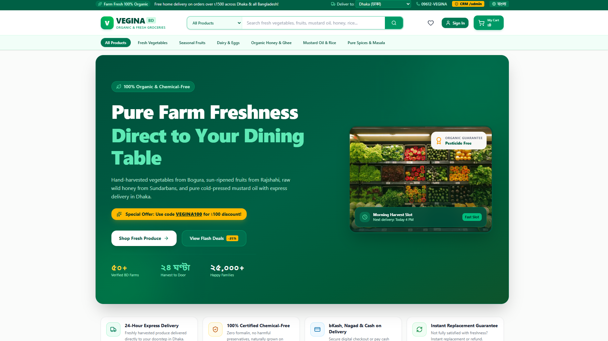
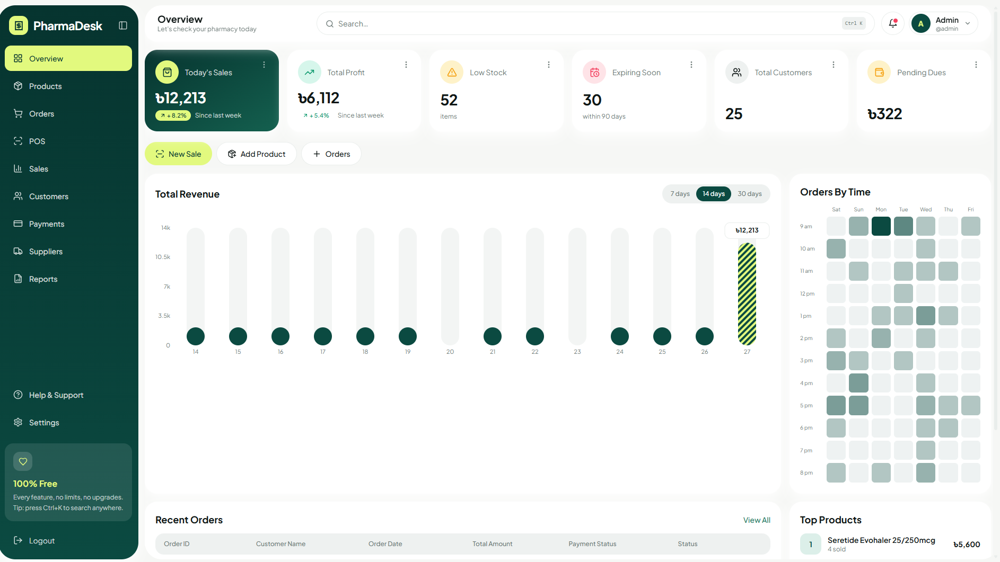
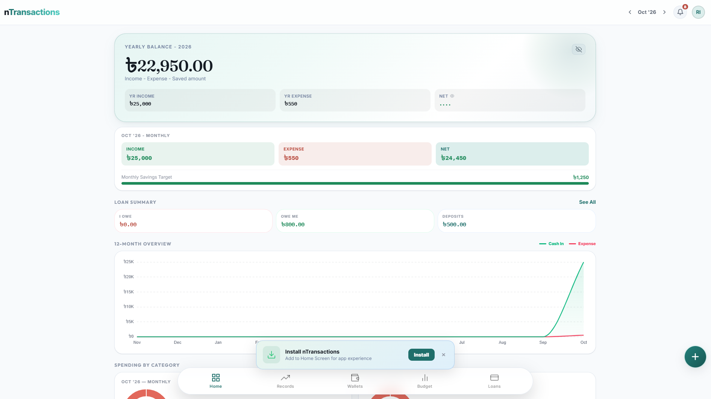
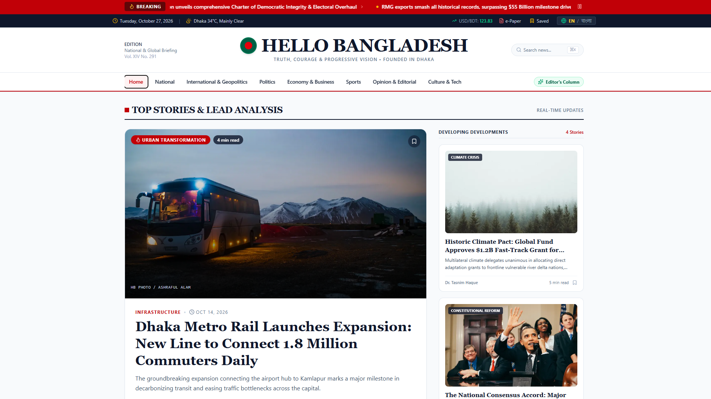
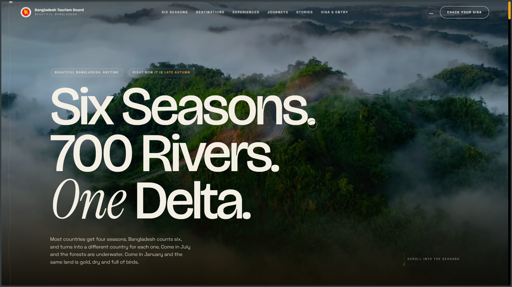
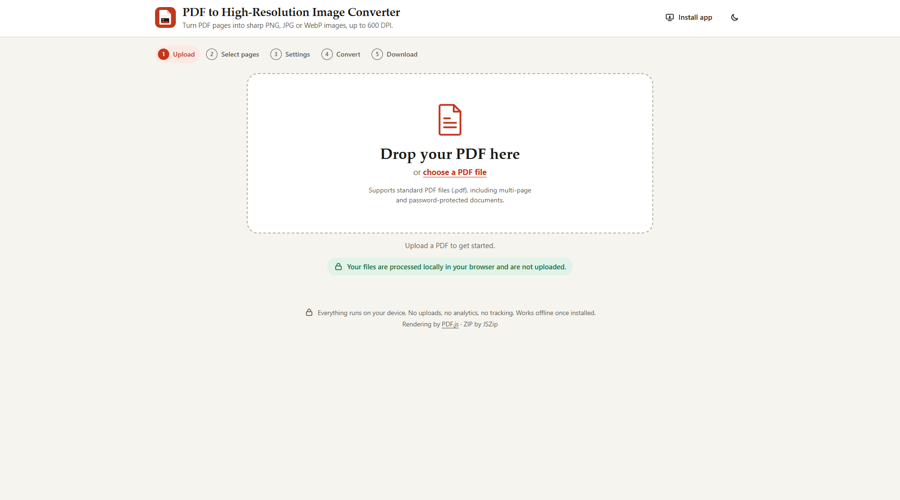
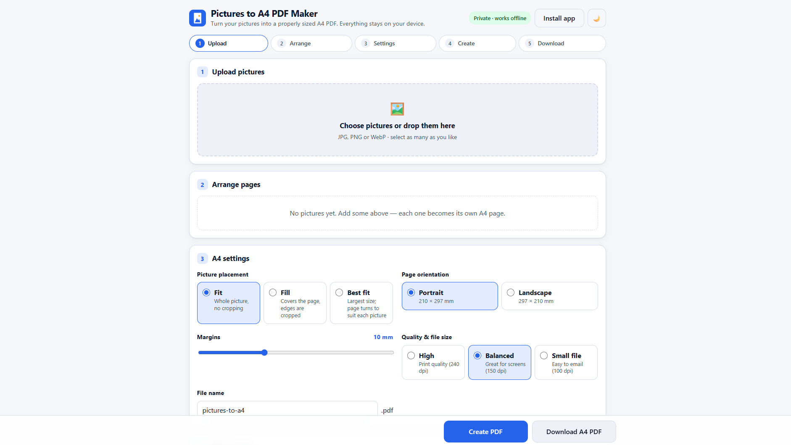
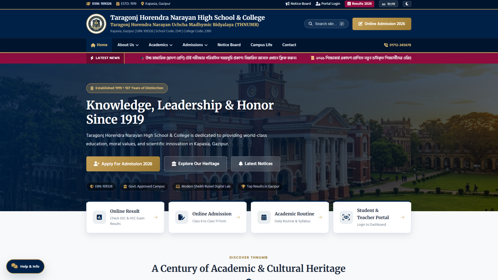

VEGINA
Organic and fresh grocery store. Farm-fresh vegetables from Bogura, fruits from Rajshahi, raw wild honey from Sundarbans, cold-pressed mustard oil, with home delivery in Dhaka and across Bangladesh.
Sociology student, technology researcher, and web builder from Gazipur, Bangladesh.
Born in Moktarpur village, Kaliganj upazila, Gazipur district. Interested in technology since childhood — reading books and magazines about inventions, watching science and technology documentaries, curious about how things work.
Now researching technology and learning new things. Interests: Artificial Intelligence, Machine Learning, Data Science, Web Development, and Cybersecurity. He wants to use technology for good, solve real-world problems, help people around him, be self-dependent, honest and hardworking, and contribute to society and the country.
Basics of reading, writing and arithmetic.
Completed primary graduation with foundational academic achievement.
Secondary education curriculum and personal growth.
Junior secondary academic certificate milestone.
Secondary school certification completed successfully.
Taragonj Horendra Narayan Uchcha Madhymic Bidyalaya — Humanities stream.
Bhawal Badre Alam Government College. Researching human society, structures, and intersection with modern digital technologies.
Scout from 2017 to 2022. Values learned: leadership, teamwork, discipline, service, patriotism, responsibility and confidence, through camps, events and projects.

Organic and fresh grocery store. Farm-fresh vegetables from Bogura, fruits from Rajshahi, raw wild honey from Sundarbans, cold-pressed mustard oil, with home delivery in Dhaka and across Bangladesh.

Pharmacy management dashboard with today's sales, profit, low stock, expiring medicines, customers, pending dues, revenue chart, orders-by-time view, recent orders and top products.

Personal finance PWA showing yearly balance, yearly income and expense, monthly income, expense and net, monthly savings target, loan summary (I owe, owe me, deposits), and a 12-month cash-in vs expense overview, with bottom navigation for Home, Records, Wallets, Budget and Loans.

Modern news portal, "National & Global Briefing", with top stories and lead analysis, including national, politics, economy, sports and culture sections.

Bangladesh Tourism Board style tourism site: "Six Seasons. 700 Rivers. One Delta." Showcasing destinations, experiences, journeys, stories and visa information.

Converts PDF pages into sharp PNG, JPG or WebP images up to 600 DPI, processed locally in the browser, no upload.

Turns pictures into properly sized A4 PDFs, private and offline, with upload, arrange, fit/fill/best-fit placement, portrait/landscape, margins and print quality settings.

School and college website, established 1919, Kapasia, Gazipur, EIIN: 109326, with online admission, online results, academic routine and student/teacher portal.
Leveraging digital tools and software to solve real-world problems and create meaningful, ethical solutions.
Supporting the people and communities around, bringing positive assistance and practical benefits to daily life.
Striving to remain self-dependent, committed to integrity, relentless perseverance, and honest effort in every endeavor.
Deep dedication to uplifting family, empowering society, and contributing constructively to the progress of Bangladesh.
Feel free to reach out via email or connect through social channels. I am always keen to discuss technology research, impactful ideas, and collaborative learning.